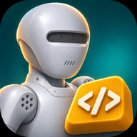
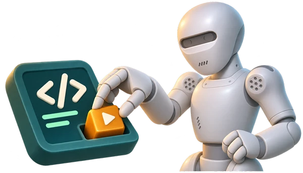

预测
先不点 run：你认为“我完成啦！”会在前进开始时出现，还是在后面出现？等待的那一段，小布米会怎样？写下理由。
把程序读成步骤
- 切到机器人视角
- 前进 2 个仿真运动秒
- 现实等待 1 秒
- 输出完成文字

NPL 代码编程 · 小布米课堂版小布米世界 ↗把一件事拆成按次序完成的指令

先不点 run：你认为“我完成啦！”会在前进开始时出现，还是在后面出现？等待的那一段，小布米会怎样？写下理由。
bumi.camera("robot")
bumi.forward(2)
wait(1)
print("我完成啦！")
只把 wait(1) 改为 wait(2)，其余代码保持原样。运行前先预测：哪两个事件之间的间隔会改变？运行后用表格核对。
只改等待时间；保留 forward(2) 和输出文字，才能看清这一次修改的作用。
先改变朝向，再决定往哪里走
把纸上的箭头当作小布米：先向前，再向左转，最后再向前。请先画出你预测的路线，并标明哪个位置发生了转向。
bumi.forward(1)
bumi.turnLeft(2)
bumi.forward(1)
bumi.stand()
print("换个方向探索")
只把 bumi.turnLeft(2) 换成 bumi.turnRight(2)，保留数字 2、两行 forward(1) 和其他代码。先画预测路线，再重置运行并比较。
只改变转向方向，先保持持续时间与前进指令相同。
把重复的一组动作写进循环
把 for 到 end 之间的部分圈起来。先预测输出会出现哪些轮次，以及前进和后退各会执行几次；再指出 stand 是每轮执行还是循环结束后执行。
for i = 1, 3 do
print("第", i, "次")
bumi.forward(1)
wait(0.5)
bumi.backward(1)
end
bumi.stand()
只把 for i = 1, 3 do 改成 for i = 1, 2 do。保留循环体、起始值 1 和循环后的 stand；预测后再运行，核对输出和动作组数。
改的是循环终止值，前进、等待、后退的每轮内容都不变。
让一个名字保存会改变的数值
在两行 forward(2, speed) 旁边，分别写出你认为当时 speed 的值。哪一行改变了它？如果只改最开始的 0.45，后面那一段会一起改变吗？
local speed = 0.45
bumi.forward(2, speed)
wait(1)
speed = 0.5
bumi.forward(2, speed)
bumi.stand()
print("哪一段走得更远？")
只把第一行 local speed = 0.45 改成 local speed = 0.4，保留后面的 speed = 0.5、两次运动时长和等待时间。先写下两次调用会取到什么值，再运行核对。
只改变量的初始值。不要同时改后面的重新赋值，否则难以判断哪一处修改影响了哪一段。
读取一次状态，让程序选择一条路
先不运行。圈出两个 print，预测本次会出现哪一句，并写下你的依据；如果现在还不知道状态，也可以写“需要先查询”。
bumi.forward(1)
local state = bumi.status()
if state.healthy then
print("行走策略正常")
else
print("行走策略尚未就绪")
end
bumi.stand()
只把真分支中的“行走策略正常”改成“我进入了真分支”，其他语句保持不变。再次运行，记录新句子有没有出现。
只改输出文字，保留 state.healthy 条件。没有出现新句子时，先查实际输出和错误，不急着认定修改失败。
把前进与转向放进同一条指令
画两条草图：一条表示你预测的原程序路线，一条表示把转速改为负数后的路线。用箭头标明机器人开始时面向哪里。
-- 前进 0.5 m/s，左转 0.3 rad/s
bumi.move(0.5, 0.3, 3)
wait(1)
bumi.stand()
print("完成弧线探索")
只把 bumi.move(0.5, 0.3, 3) 的第二个参数改成 -0.3，保留速度 0.5、时长 3 和其他语句，再比较两次路线。
只改转向速度的正负号。以机器人自身的左右为参照，不用屏幕的左右代替。
先换整机方案，再给部件指定颜色
按语句顺序，在纸上标记头部和左臂可能经历的颜色变化。最后一行执行后，你预测会保留哪一种配色？
bumi.setColorPreset("whiteBlue")
bumi.setColor("head", "#FF8800")
bumi.setColor("leftArm", "#52BF90")
print("头部颜色", bumi.getColors().head)
wait(3)
bumi.resetColors()
只把 head 那一行的 #FF8800 改为 #318CDB，其他部件、方案和等待时间保持不变，再运行一次。
只改头部的一个六位色值。比较时同时观察头部、左臂和输出，记录变化而不预填答案。
用暂停和倍速，安排一段动作的观看节奏
在“播放 10 秒—暂停 1 秒—半速继续 20 秒”的时间线上，标出哪些段落的姿态会变化。先预测后段动作时间大约前进多少，不把预测当作实测。
bumi.camera("robot")
-- 舞蹈：dance1_subject1
-- 跳跃：jumps1_subject1
-- 倒地与起身：fallAndGetUp3_subject1
-- 格斗：fight1_subject2
for _, clip in ipairs(bumi.getClips()) do
print(clip.label, clip.id, clip.duration)
end
local clipId = "dance1_subject1" -- 换成上面的其他 ID 试试
bumi.startReplay(clipId)
wait(10) -- 先越过准备动作，观察抬臂和迈步
bumi.pauseReplay()
wait(1)
bumi.setReplayRate(0.5)
bumi.resumeReplay()
wait(20) -- 半速播放 20 秒，动作时间前进约 10 秒
bumi.stopReplay()
print("回放练习结束")
只把 bumi.setReplayRate(0.5) 中的 0.5 改成 1，保留两个观看等待时间和其他语句，再运行比较后半段节奏。
只改后段回放倍速。记录实际看到的变化；约前进多少动作时间是根据倍速与时间的推算，不冒充本次精确测量。
把配色、文字和动作排成一段有开头与结尾的程序
先读代码：欢迎文字、前进、左转和切换视角，谁先谁后？哪一句文字需要条件成立才会出现？请写下你的预测顺序。
bumi.reset()
bumi.camera("robot")
bumi.setColorPreset("whiteBlue")
bumi.setColor("head", "#FF8800")
print("欢迎来到小布米课堂！")
bumi.forward(2, 0.5)
wait(0.5)
bumi.turnLeft(1, 0.4)
bumi.stand()
if bumi.status().healthy then
print("我已准备好，开始探索吧！")
end
wait(1)
bumi.camera("player")
只把 bumi.forward(2, 0.5) 中的第一个数字 2 改成 1，其余保持不变。先预测，再运行并比较。
前进时长变了，欢迎语、转向参数和切换视角的代码有没有改变？用你看到的结果作说明。
让同一台小布米依次使用列表中的颜色
不运行先预测：这份颜色列表会让循环执行几轮？请为每轮画一个小色块，并写出你预测的站点号。
bumi.reset()
bumi.camera("robot")
bumi.setColorPreset("classic")
local colors = {"#EA5555", "#FFE066", "#52BF90"}
for station, color in ipairs(colors) do
bumi.setColor("head", color)
bumi.setColor("torso", color)
print("巡逻站点", station, bumi.getColors().head)
bumi.forward(1, 0.5)
wait(0.5)
bumi.backward(1, 0.5)
bumi.stand()
end
bumi.resetColors()
print("巡逻完成，恢复默认配色")
只把 colors 列表的第二项改为 "#318CDB"，不改列表长度和运动代码。先说出预测，再运行。
哪一轮发生变化？请在记录表中用“原来 → 这次”补写这一轮的颜色，同时核对轮数和动作。
编排行走、片段选择、暂停与慢放之间的衔接
先给代码分段：哪些语句属于行走，哪些属于回放？再猜一猜，暂停时的 wait(0.5) 会不会让动作时间继续前进？把理由留到运行后核对。
bumi.reset()
bumi.camera("robot")
bumi.setColorPreset("blackGold")
bumi.forward(1, 0.5)
bumi.stand()
local clips = bumi.getClips()
local selected = nil
for _, clip in ipairs(clips) do
if clip.id == "dance1_subject1" then
selected = clip
end
end
if selected then
print("现在表演：", selected.label)
bumi.startReplay(selected.id)
wait(10) -- 开头约 3.5 秒是准备动作，先看一段舞蹈再暂停
bumi.pauseReplay()
bumi.setColor("head", "#FFE066")
wait(0.5)
bumi.setReplayRate(0.5)
bumi.resumeReplay()
wait(20) -- 半速观看接下来的约 10 秒动作
local replay = bumi.replayStatus()
print("回放状态", replay.state, "动作时间", replay.time)
bumi.stopReplay()
bumi.backward(1, 0.5)
bumi.stand()
else
print("当前目录没有这个舞蹈，换个片段再试试")
end
bumi.resetColors()
只把 bumi.setReplayRate(0.5) 中的 0.5 改为 1，保留后面的 wait(20) 及其他代码。运行前预测，再比较两次输出的动作时间。
现实等待时间相同，动作时间的推进有什么不同？这项修改是否改变了动作数据本身？
用相同时长、可比起点和重复观察检验自己的猜想
先看两组 trial：你预测三秒运动中哪一组看起来移动更多，还是可能难以分辨？写下理由，并列出比较时需要保持相同的两个条件。
bumi.camera("robot")
local trials = {
{speed = 0.45, color = "#318CDB"},
{speed = 0.5, color = "#FF982E"}
}
for i, trial in ipairs(trials) do
bumi.reset()
bumi.setColor("head", trial.color)
print("第", i, "组，目标速度", trial.speed)
wait(1)
bumi.forward(3, trial.speed)
print("行走策略正常：", bumi.status().healthy)
wait(1)
end
bumi.stand()
bumi.resetColors()
print("观察：哪一组在三秒内走得更远？")
只把循环里的 bumi.forward(3, trial.speed) 的数字 3 改为 2，两组都会用新的运动时长；保留两组目标速度和其余代码。先预测，再重做观察。
时长改变后，两组的现象是否仍容易区分？用修改前后的记录说明，不把预期写成实测。